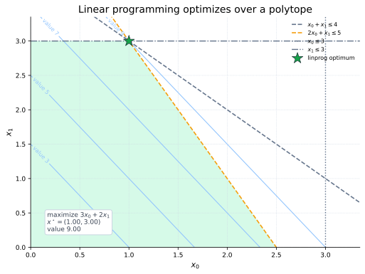
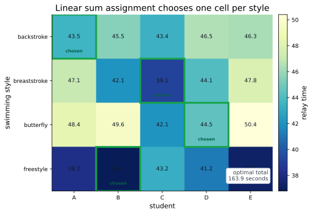
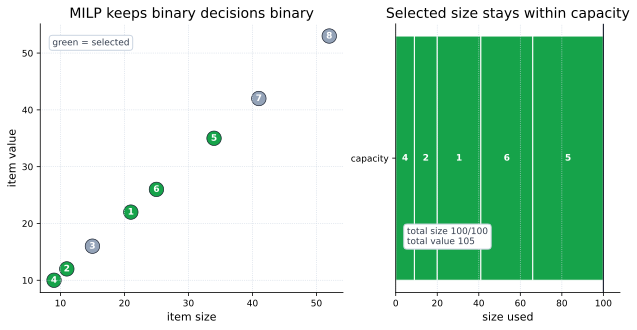

Model First, Then Solve
A smooth local minimizer starts from a point and follows local information. Structured optimization starts one level earlier: first describe the decision variables, objective, and constraints in a form a specialized solver understands.
The key question is not only "what value should be small?" It is also "what kind of choices are allowed?" Continuous decisions, one-to-one assignments, and binary decisions need different models.
| Problem structure | Decision meaning | SciPy tool |
|---|---|---|
| Linear program | Continuous variables with linear objective and constraints. | linprog |
| Assignment | Choose row-column matches with minimum total cost. | linear_sum_assignment |
| Mixed-integer linear program | Some variables must be integer or binary. | milp |
Linear Programming
A linear program has a linear objective and linear constraints. The
decision vector is \(x\). The objective coefficients are \(c\), so
the scalar objective is \(c^\mathsf{T}x\). SciPy's
linprog expects the common minimization form
Each row of \(A_{\mathrm{ub}}\) is one less-than-or-equal
inequality. Each row of \(A_{\mathrm{eq}}\) is one equality. The
lower and upper vectors \(\ell\) and \(u\) are simple variable
bounds. By default, linprog treats variables as
nonnegative unless you specify different bounds.
The failed shortcut is to send this to a generic nonlinear optimizer. That hides the linear geometry. In a linear program, the feasible region is a polytope and a linear objective reaches its optimum at a boundary point, often a vertex.

linprog uses HiGHS solvers for these
models.
Maximization Is A Sign Choice
Many real problems are described as maximization: maximize value,
profit, throughput, or score. linprog and
milp minimize. The conversion is simple but important:
maximizing \(v^\mathsf{T}x\) is the same decision as minimizing its
negative.
This is a common source of bugs. If the reported objective has the opposite sign from the business quantity you care about, that may be correct: the solver minimized the negated objective.
Assignment Problems
An assignment problem is not just "pick the cheapest entry in each row." Rows and columns compete. Once a column is used, it cannot be reused by another row in the same assignment.
Let \(C_{ij}\) be the cost of assigning row \(i\) to column \(j\). Let \(X_{ij}\) be a binary decision: \(1\) if that assignment is chosen, and \(0\) otherwise. For a square one-to-one assignment,
linear_sum_assignment takes the cost matrix and returns
the row and column indices of the selected cells. It can also handle
rectangular cost matrices, where not every row or column must
necessarily be matched.

Mixed-Integer Linear Programming
Mixed-integer linear programming keeps the linear objective and linear constraints, but some variables must be integer-valued. A binary variable is the most common special case:
The tutorial's knapsack example chooses whole items. Each item has a value \(v_i\), a size \(s_i\), and a binary decision \(x_i\). The capacity is \(C\):
The tempting shortcut is to solve a relaxed linear program and round
the fractional solution. That can break capacity constraints or miss
the true best integer combination. milp keeps the
discrete decision semantics in the model.

Use Structured Optimization In SciPy
The APIs differ because the models differ: arrays for linear programs, a cost matrix for assignment, and integrality flags for mixed-integer linear programs.
import numpy as np
from scipy import optimize as opt
c = np.array([-3.0, -2.0])
A_ub = np.array([
[1.0, 1.0],
[2.0, 1.0],
[1.0, 0.0],
[0.0, 1.0],
])
b_ub = np.array([
4.0,
5.0,
3.0,
3.0,
])
lp_bounds = [
(0.0, None),
(0.0, None),
]
lp = opt.linprog(
c,
A_ub=A_ub,
b_ub=b_ub,
bounds=lp_bounds,
method="highs",
)
cost = np.array([
[43.5, 45.5, 43.4],
[47.1, 42.1, 39.1],
[48.4, 49.6, 42.1],
])
lsa = opt.linear_sum_assignment
rows, cols = lsa(cost)
chosen = cost[rows, cols]
total = chosen.sum()
sizes = np.array([21, 11, 15])
values = np.array([22, 12, 16])
capacity = 35
lc = opt.LinearConstraint
constraint = lc(
A=sizes[None, :],
lb=0,
ub=capacity,
)
binary = np.ones_like(values)
binary_bounds = opt.Bounds(0, 1)
knapsack = opt.milp(
c=-values,
constraints=constraint,
integrality=binary,
bounds=binary_bounds,
)
print(lp.x, -lp.fun)
print(rows, cols, total)
print(knapsack.x)
print(-knapsack.fun)Read the signs carefully. In the LP and knapsack examples, the code minimizes negative values in order to maximize the original value. The solution vector is still the decision you want; the reported solver objective may need to be negated to recover the original maximization value.
When To Use It
| Tool | Use when | Modeling habit |
|---|---|---|
linprog |
Objective and constraints are linear and variables are continuous. | Convert all inequalities to the expected direction and state bounds explicitly. |
linear_sum_assignment |
You need one-to-one matching with minimum total cost. | Build a cost matrix whose rows and columns are the assignable groups. |
milp |
Some variables must be integer, semi-continuous, semi-integer, or binary. | Use integrality, bounds, and LinearConstraint to encode decisions. |